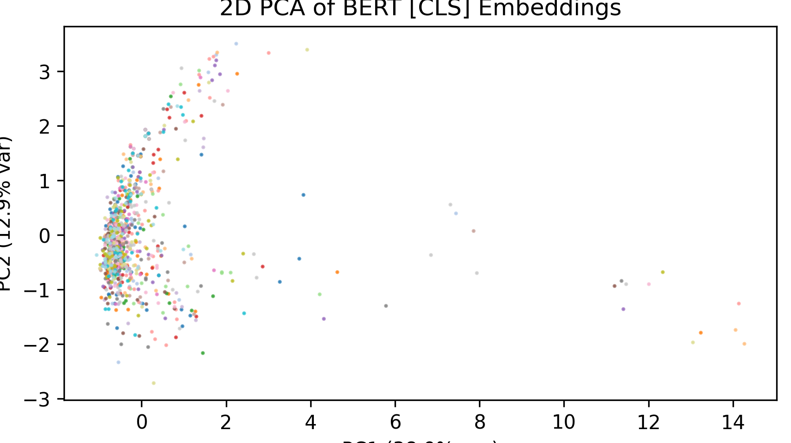
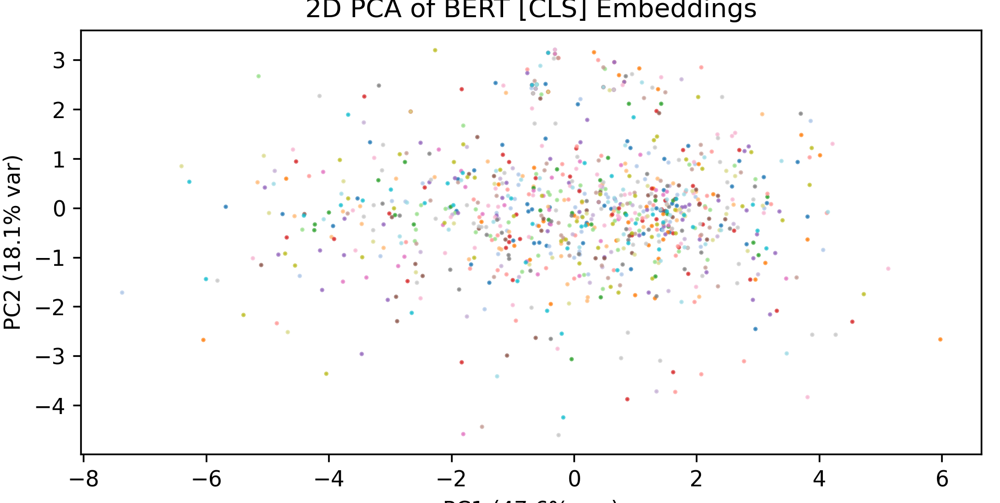
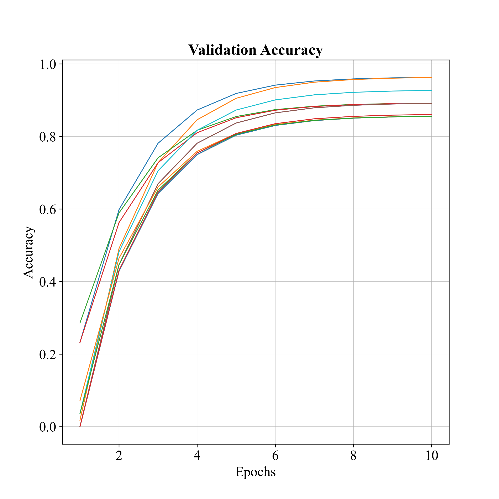
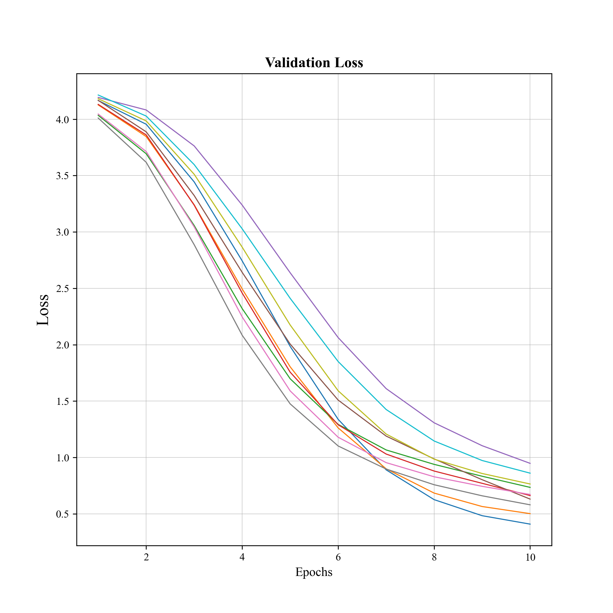
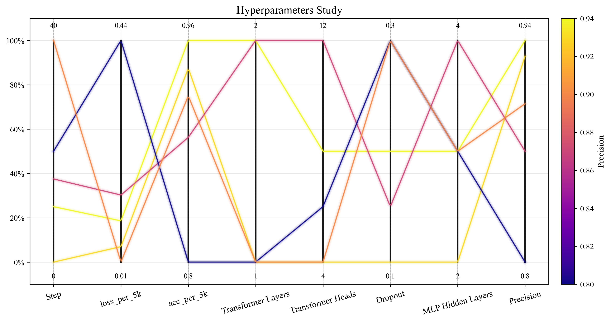

Automation in Construction, 2026
Transformer-based framework for mapping client requirements to BIM
Department of Architecture, Kyung Hee University, South Korea
Automation in Construction, vol. 181, art. 106601

Abstract
Client requirements arrive as unstructured text, whereas BIM authoring needs structured, coded objects. Bridging the two by hand demands repeated client–architect iteration and bespoke parametric modeling, which adds latency and inconsistency in early design. We present a pipeline that fine-tunes BERT to map free-text requirements to BIM model codes, and a semantic layer that retrieves the matching model from a curated IFC repository and writes it into the authoring environment.
On a multi-project evaluation set, the framework reached 92% alignment accuracy between client inputs and instantiated BIM elements. Domain pretraining raised the F1 score from 87% to 95%, and the proposed architecture reached 96%. The approach improves requirement traceability and gives stakeholders a direct view of how a requirement was interpreted.
Keywords: BIM, BERT, NLP, recommendation, office, architecture, design
Contributions
- An end-to-end text-to-BIM pipeline that goes from a client statement to a retrieved IFC model without manual re-entry.
- A multimodal corpus of 40 office-building BIM models with rendered views, metadata and more than 30,000 expert-written and augmented descriptions.
- English, Korean and multilingual BERT classifiers, with an ablation of domain pretraining.
- Open code, sample data and weights for replication.
Method
The framework has four layers: data preparation, transformer training, inference and mapping, and a user interface. Each BIM model is exported to IFC and carries a three-letter identifier extended with mirroring and rotation flags, so layout variants remain traceable from text through imagery to parameters.
Data and training
Descriptions combine expert annotation, image-to-text generation and targeted augmentation to widen lexical variety; Korean translations form a bilingual set. Classes are balanced by random undersampling to the size of the smallest class, which removes the need for class weights. A fully connected classification head is trained end to end with the BERT encoder, and hyperparameters are tuned with k-fold validation. Performance is reported as accuracy, precision, recall and F1 score.
Results
| Setting | Model | F1 score |
|---|---|---|
| Architecture | BERT baseline | 87% |
| Architecture | Pretrained BERT + baseline head | 95% |
| Architecture | Pretrained BERT + proposed head | 96% |
| Language | BERT English | 91% |
| Language | BERT Korean | 89% |
| Language | BERT multilingual | 90% |
Domain pretraining accounts for most of the gain over the vanilla baseline (+8 points F1). The English model scores highest among the language variants and the multilingual model trails it slightly, consistent with spreading capacity over several languages.




Limitations
The corpus is small and researcher-curated, so transfer to heterogeneous project data is untested. Robustness for non-English input is weaker, and task-scoped training prevents direct comparison with broader NLP and vision-language BIM baselines. Future work covers larger and more varied datasets, class-imbalance sensitivity, broader IFC schema coverage, and model compression for resource-constrained deployment.
Resources
- Article (ScienceDirect) Published version of record.
- Open-access copy (Zenodo) Archived copy of the article, CC BY 4.0.
- GitHub repository Training code, setup files and sample data.
- Hugging Face model Pretrained and fine-tuned checkpoints.
- OpenConstruction entry Model reference page.
- Author portfolio Syed Haseeb Shah: publications and related projects.
Audio summary
Download the model
from huggingface_hub import hf_hub_download
file_path = hf_hub_download(
repo_id="ZappyKirby/client-to-bim",
filename="model.safetensors"
)Citation
If you use this work, please cite the article. An archived open-access copy is available on Zenodo.
Shah, S. H., Rehman, S. U., Kim, I., & Hwang, K.-E. (2026). Transformer-based framework for mapping client requirements to BIM. Automation in Construction, 181, 106601. https://doi.org/10.1016/j.autcon.2025.106601
@article{SHAH2026106601,
title = {Transformer-based framework for mapping client requirements to BIM},
journal = {Automation in Construction},
volume = {181},
pages = {106601},
year = {2026},
issn = {0926-5805},
doi = {10.1016/j.autcon.2025.106601},
url = {https://www.sciencedirect.com/science/article/pii/S0926580525006417},
note = {Open-access copy: https://zenodo.org/records/17345735},
author = {Syed Haseeb Shah and Saddiq Ur Rehman and Inhan Kim and Kyung-Eun Hwang},
keywords = {BIM, BERT, NLP, Recommendation, Office, Architecture, Design}
}